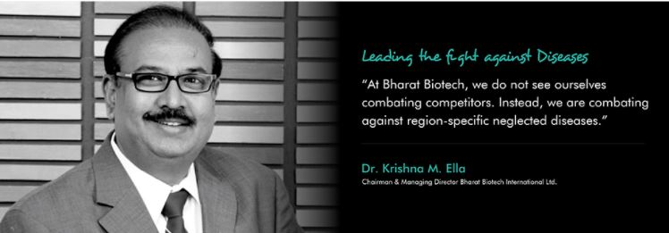

DR. M KRISHNA ELLA

Dr. Krishna Ella is the Chairman & Managing Director of Bharat Biotech International Limited, which he incorporated in 1996. A gold medallist at university, Dr. Ella worked as a research faculty at the Medical University of South Carolina, Charleston after earning his Ph.D. from the University of Wisconsin-Madison. A research scientist in Molecular Biology, Dr. Ella strongly believes that innovative technology in vaccine development is essential to solve public healthcare problems caused by infectious diseases. Under Dr. Ella’s leadership, Bharat Biotech has grown to become a global leader in innovative vaccine. A serial entrepreneur with a passion for innovative ideas, Dr. Ella has also ventured into veterinary vaccines, food processing, and developing biotechnology infrastructure in the country. Dr. Ella is also involved in shaping India’s science education and policy through his association with several committees such as:
- cientific Advisory Committee to the Union Cabinet
- CSIR Governing Council.
- CCMB Governing Council.
- Research Council for CSIR National Laboratories.
- Board of Visitors – Global Health Institute, University of Wisconsin-Madison.
Several awards have been conferred on Dr. Ella including the ET Now Special Recognition for Healthcare Industry Award, J R D Tata—Best Entrepreneur of the Year Award, Marico Innovation Award and University of Southern California—Asia-Pacific Leadership Award.